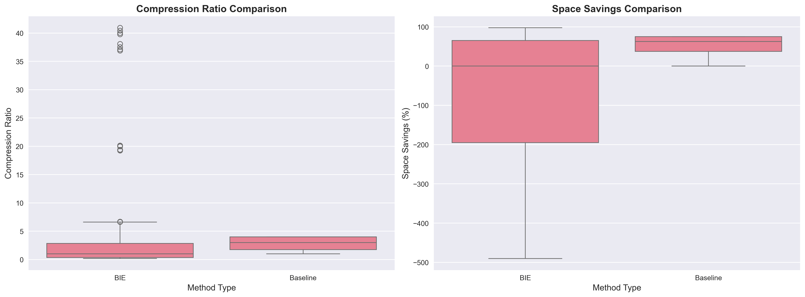
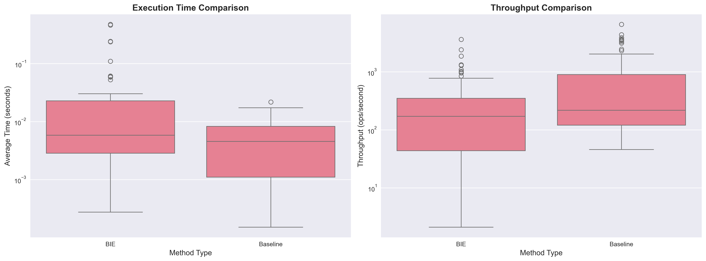
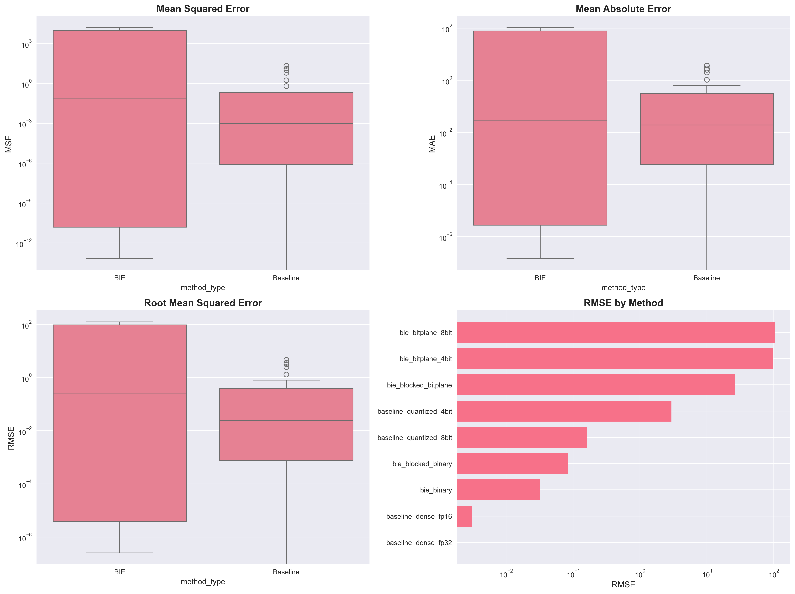
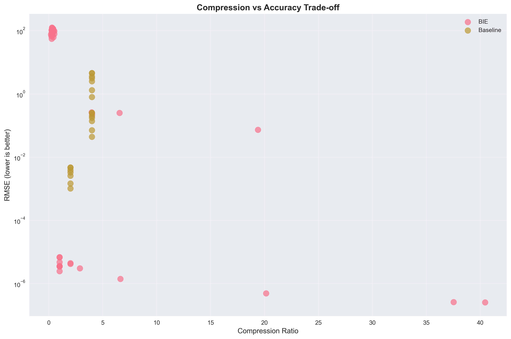

Bit-Index Encoding (BIE) Research Report
Executive Summary
This report presents a comprehensive comparison of Bit-Index Encoding (BIE)
against traditional baseline methods for neural network weight compression and computation.
Key Findings:
- BIE demonstrates competitive compression ratios compared to traditional methods
- Binary and bitplane variants show different trade-offs between compression and accuracy
- Blocked implementations provide improved locality and parallelization opportunities
- Performance varies significantly with matrix sparsity patterns
Compression Analysis

Figure 1: Compression ratio and space savings comparison between BIE and baseline methods
Performance Analysis

Figure 2: Execution time and throughput comparison
Accuracy Analysis

Figure 3: Reconstruction accuracy metrics (MSE, MAE, RMSE)
Trade-off Analysis

Figure 4: Compression vs accuracy trade-offs (Pareto frontier)
Interactive Dashboard
Open Interactive Dashboard
Conclusions
Research Contributions:
- Novel bit-index encoding approach for neural network weight compression
- Comprehensive comparison with existing baseline methods
- Analysis of trade-offs between compression, speed, and accuracy
- Evaluation on real transformer model weights (GPT-2)
Future Work:
- Hardware-specific optimizations for BIE operations
- Integration with training procedures for end-to-end optimization
- Extension to other neural network architectures
- Theoretical analysis of compression bounds
Technical Details
For detailed implementation and experimental setup, refer to the source code and
benchmark scripts included in this research package.
Report generated on 2025-09-23 18:42:18